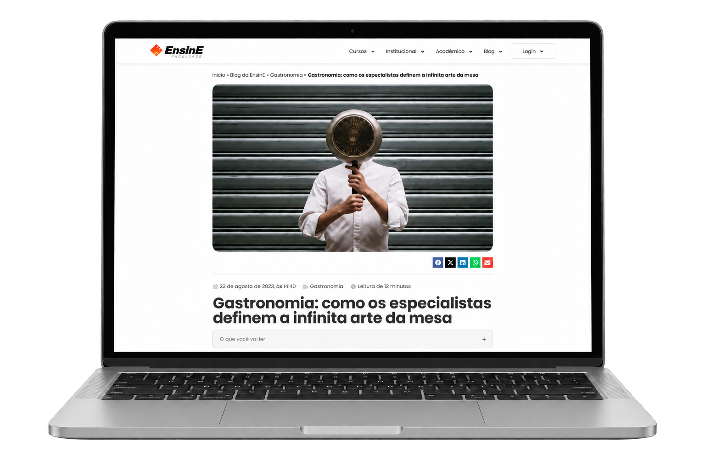
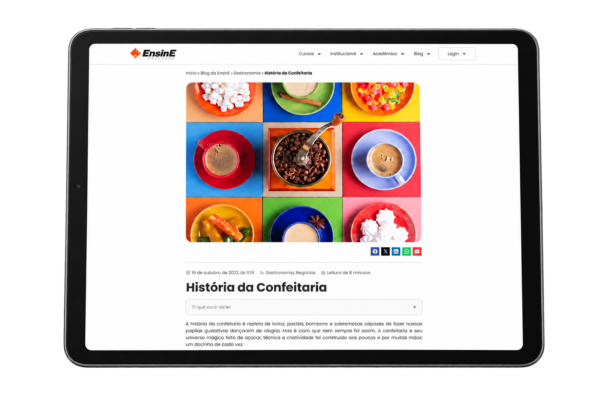
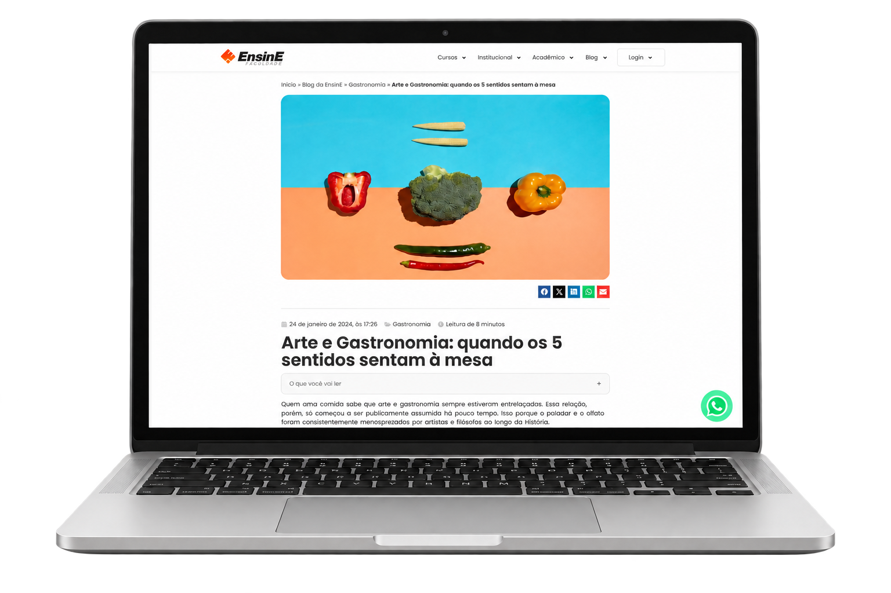
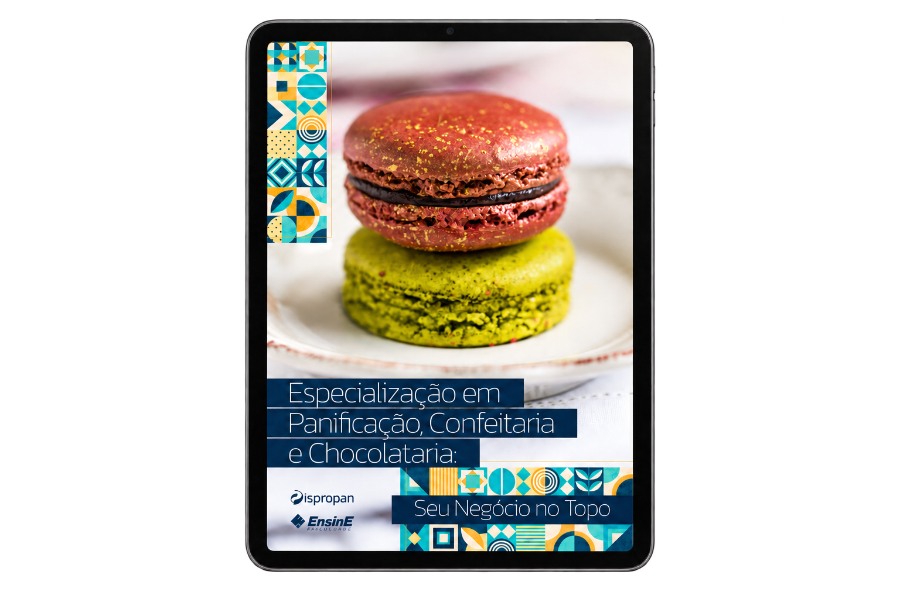
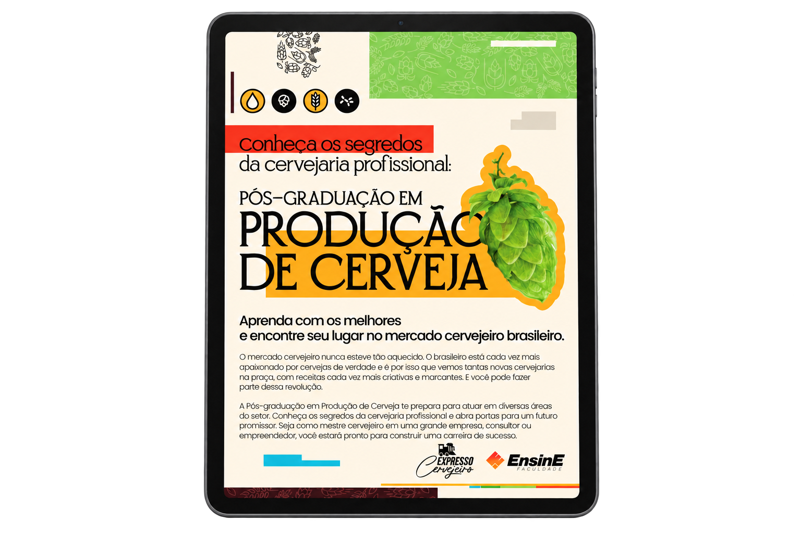

Launching a Gastronomy degree through research, positioning & SEO
From product positioning and information architecture to an SEO-led content system built to expand organic discovery around a new distance-learning degree.
A new product needed more than a launch campaign.
EnsinE was preparing to launch a new distance-learning Gastronomy degree. The challenge was to establish a clear product position while creating a content structure capable of connecting audience interest, search demand and the program itself.
My role
Product marketing for the Gastronomy degree was co-defined with the CMO.
I designed EnsinE's course information architecture and organic content system around thematic clusters and content funnels, connecting search discovery, editorial depth and lead-generation assets.
I led EnsinE's broader organic-content strategy and the Gastronomy course-page copy.
Before content came the question: what should this product mean to its audience?
Market
Where could the new degree create a distinct position?
Audience
What interests, questions and search behaviors surrounded Gastronomy?
Product
What should make the program relevant and credible?
Search
Which informational territories could connect demand to the degree?
Turning positioning into a content system.
I organized EnsinE's organic-content system by course, mapping course-specific thematic territories into clusters and content funnels. Gastronomy was one concrete implementation within this broader editorial and organic-growth architecture.
Thematic territories across the system
Each theme follows a pillar-led funnel; internal links connect related pieces and relevant themes.
Top-of-funnel pillar
A broad entry point into the theme, built around audience questions and search demand.
Middle & bottom content
Connected pieces deepen the subject and address more specific interests and practical needs.
Rich content & mini-courses
Rich content and free mini-course registration forms support deeper engagement and lead-capture opportunities.
Internal linking
Connects funnel levels, individual pieces and adjacent relevant topics.
Gastronomy


The system was built through connected content, not isolated posts.
Selected writing, internal links and supporting content. Open any image to inspect the full capture.

From the first page to the learning offer.
Selected pages from two EnsinE educational brochures. Open a page to inspect it at full size, or explore the complete material.
Panificação, Confeitaria e Chocolataria
Specialization brochure · product presentation, professional skills and course content.
p. 01 · CoverProdução de Cerveja
Supporting content asset from the broader gastronomy / education content ecosystem.
p. 01 · CoverWhat changed over the first year.
SEMrush · Jun 2023 → Jun 2024Tracked keywords
Scale 0–2,000Top-3 search positions
Scale 0–200 · end-of-period figureEstimated monthly organic visits
Scale 0–22,000The outcome was not simply more content.
The project connected market and audience research, product positioning, information architecture and SEO into a single editorial system — turning a new degree into a discoverable body of knowledge around Gastronomy.
Research & Sensemaking
Understanding market, audience and informational territory.
Product & Content Positioning
Connecting value proposition and audience language.
Editorial Systems
Organizing thematic clusters into pillar-led funnels and connected content.
SEO & Audience Development
Building organic discovery around the product.
Selected live work
Selected work written / produced by Filipe Galvão.